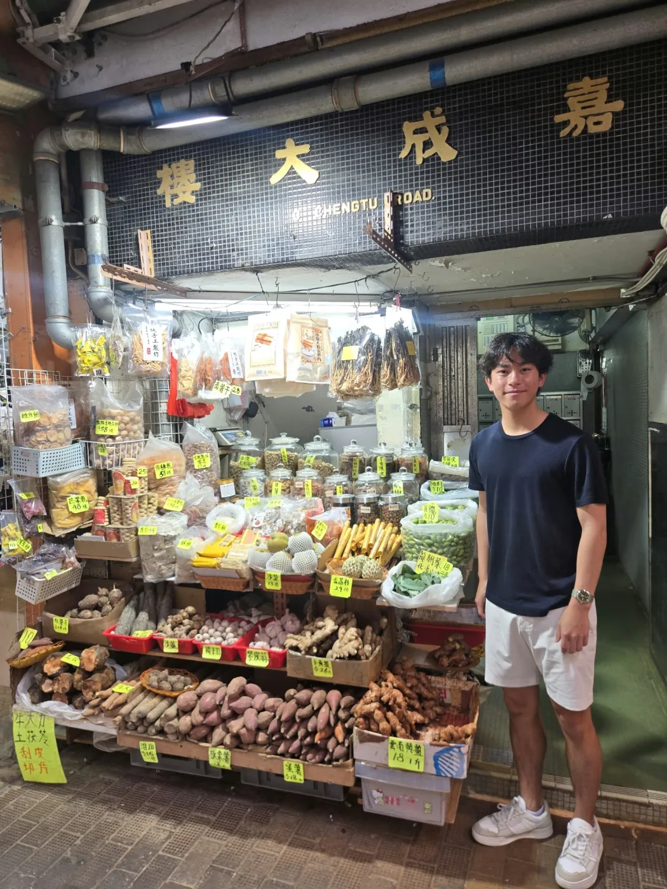
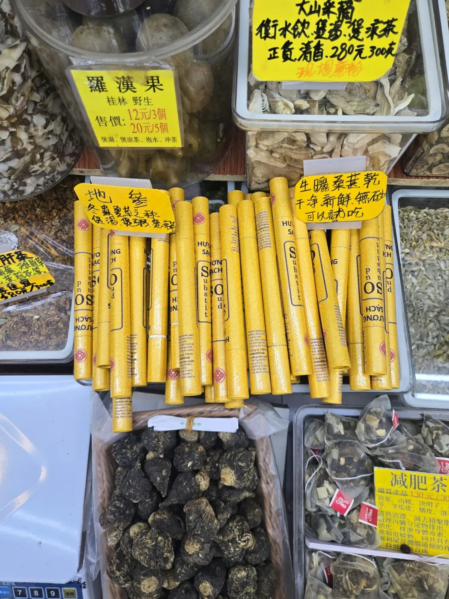
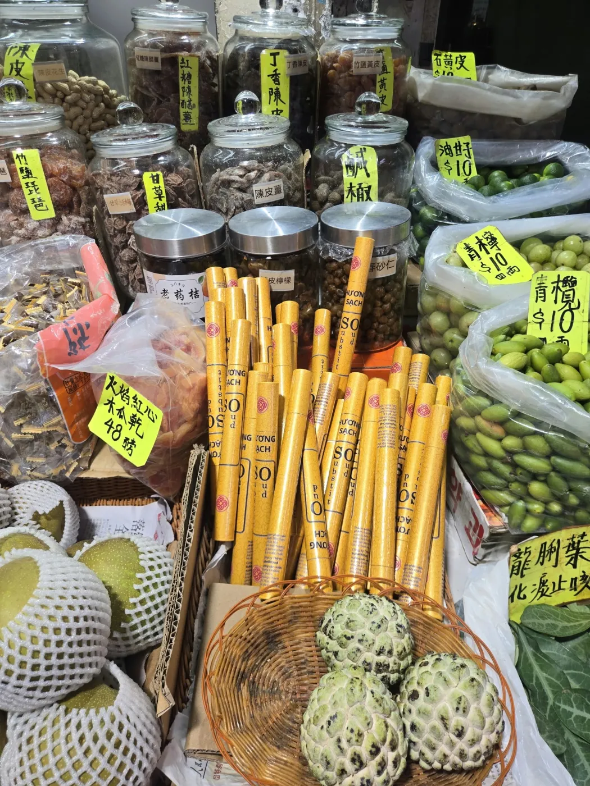
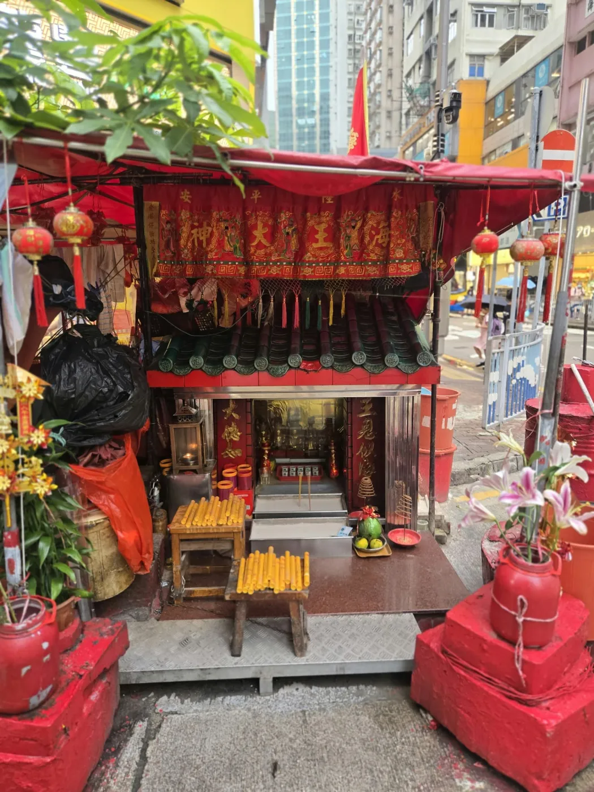

September 2026
Now in Hong Kong
SubstitOud is on shelves in Hong Kong, sold through the dried-goods and herbal shops of the old streets and burned at the roadside shrines people stop at on their way past.
The expansion was led by Jonathan So, our Regional Director for Hong Kong.



